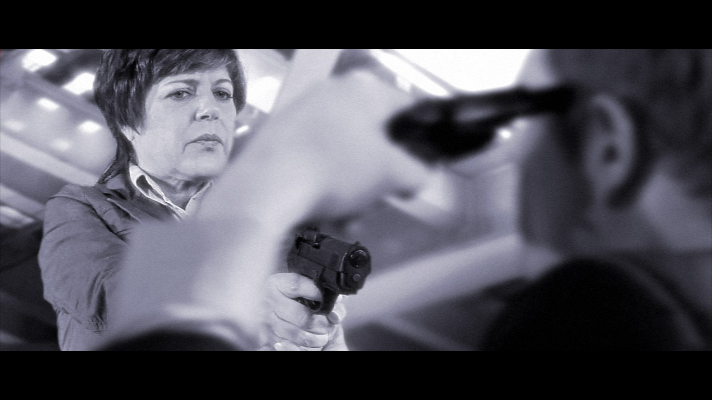

Still Photos
Happy Independence Day!! We broke tradition this year and did not get to see the fireworks in Lombard, as we normally do. Instead, we spent the day at the theater, seeing Koozaat the United Center, followed by Carol in…
This ain't your British farce
A message from Carol: Still Photos, which opens next Friday, June 27, at Trap Door Theatre, is very different from plays I've done previously. It's a love story (which usually appeals to the ladies) about two women…

Carol Stops Traffic in Romeoville
Greetings Fans! If you were in the southern suburbs today, you may have encountered unusually heavy traffic around Weber Rd. and I-55. Carol was appearing at the 7-Eleven at Weber and Normantown Roads, and motorists…

Overproof
Jeff Garretson threatens to commit suicide in Overproof. While Carol's performance in Overproof is finished, the production has just begun. Most of the shooting was done on green screen, as the movie takes place in the…
Point of Contention Podcast
Hey fans! Point of Contention produces a monthly podcast, and the next three episodes will be focusing on their upcoming production: Still Photos. This month's podcast features an explanation of what Still Photos is…
1 comment
Murder, Dodgeville, and Overproof
Welcome back fans! Forgive me for the long drought of new information. Contrary to my lack of updates, Carol has remained busy during the past month (although, sadly, she is not part of the rumored MacGyver movie).…
Extra! Extra!
Greetings Fans! You may have guessed, the previous post was a bit of fun-- although Carol would welcome the opportunity to work with RDA on anything, should the opportunity present itself! Happy April Fools Day! All…
Huge News!
Hello Fans, It is Tuesday, April 1, and OMG! Carol has landed a leading part in a re-make of the 1980s classic television series, MacGyver! Richard Dean Anderson will be reprising his role as the uncommon action hero,…
2 comments
The Vision
Hello Fans, Our starlet has been very busy! In between auditions, and improv performances, and marketing promotions, she has also found time to appear in a local independent film: The Vision. "When an over ambitious…
Save The Dates!
Carol has been cast in a new show with Point of Contention Theatre Company! The show is Still Photos, by Vanda, and will run June 27 - July 27 at the Trap Door Theatre, in Chicago. Carol will be playing the part of…